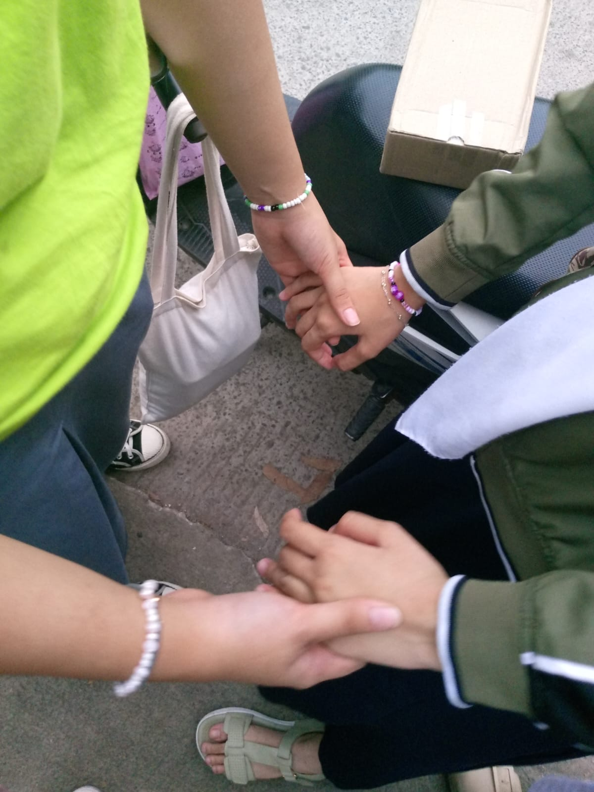
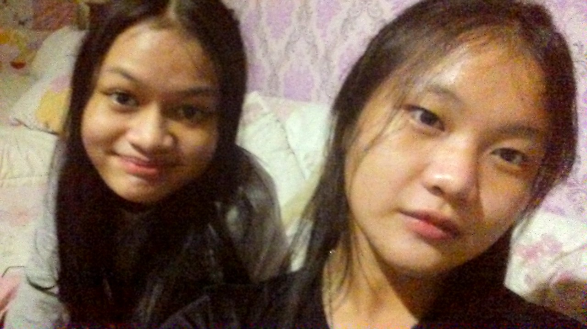
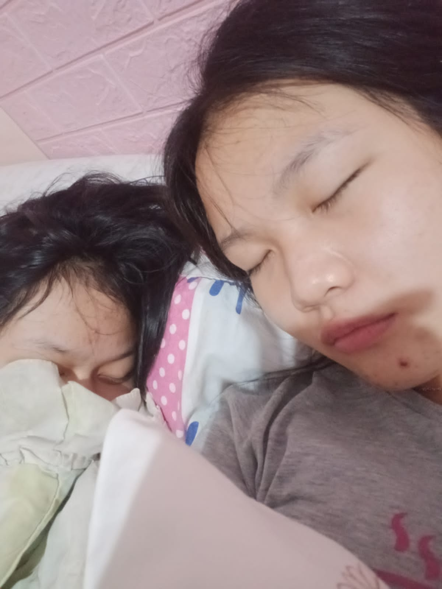

Unbreakable
Friendship
What makes our friendship became inseparable? How our friendship becomes longlast? When did we became this way as friends ever since we met on elementary school until now?

Dimulai dengan first impression gw ke elu. Rill macam bocah songong cuk. Mana dulu kan rambut lu pendek ya, jadi gw udah judgemental banget ke elu awokawokawok :vVvvvVvVVv
Tapi kita entah gimana caranya lama-lama jadi deket dan kemana-mana pun selalu bareng. Bahkan kita les di luar sekolah juga sama Kak Selvi demi nilai bagus anjr, kocak emang.

Lalu, covid pun menerjang. Kita jadi pisah, mana beda SMP lagi (hum sebel). Tapi, masa-masa covid lockdown menurut gw adalah masa-masa di mana kita banyak banget lika-likunya anjay.
Dari kita apa-apa telpon bareng, sahur sempet-sempetnya call, main rp bareng, main game bareng, cerita bareng, bahas zodiak bareng, gila bareng, semuanya bareng. Terus ada kalanya kita lagi telpon tiba-tiba mati, entah karena internet atau hpnya emg butut.

Dan ada kalanya juga kita sering berantem WKWKWKWK. SUMPAH DIPIKIR-PIKIR NGGA JELAS BANGET YA, TERUTAMA GW SIH.... gw yakin banget kalau kita temenan di masa sekarang dengan kelakuan gw yang dulu, lu udah cutt off gw sih... WKWKWK.
Tapi jujur ya, gw jadi belajar banyak seiring berjalannya waktu, lebih bisa berpikir bijak (boong), emotional stable, belajar buat lebih komunikatif, ngga silent treatment, dan hal buruk lainnya pada saat itu. Gw kadang suka kepikiran dan bersalah banget sama elu. Dulu lu seakan samsak gw kalau gw bete, anjg banget jahat ya gw. Tapi, disatu sisi lain, lu juga orang yang termasuk melihat segala kepribadian gw dari yg paling buruk, buruk, mungkin buruk, ada buruk, mendingan dikit, oke lah, better :vVV
Tapi serius, makasih banyak ya udah mau temenan sama gw. Maafin gw juga yah frend.

DILANJUT DENGAN MASA SMA. Yaa sebenarnya kita baik-baik ajasiihhhh.. tapi gw juga kangen lu, pengen rasanya sekali lagi kita satu sekolah terus ngelakuin hal idiot random apa pun itu (contoh: tukeran kaos kaki pas mapel agama lagi mau setor hapalan anjg WKWKWK bau gblk).
Apa pun masalahnya, lu termasuk orang yang terlintas di kepala gw ketika gw butuh bantuan atau solusi.. contohnya kisah cinta (yang sekarang udah kandas) gw dengan marchel. Senengnya ada banget, tapi sedihnya juga ada. Lu tetep mau bales chat gw kalau gw lagi ngeluh karena dia. Lu adalah orang yang gw butuhkan kalau butuh kata-kata tamparan awokawok. Makasih banyak ya syg. Lu tetap cintanya gw kok, yang kemarin mah karena ngga sengaja kepincut aje.